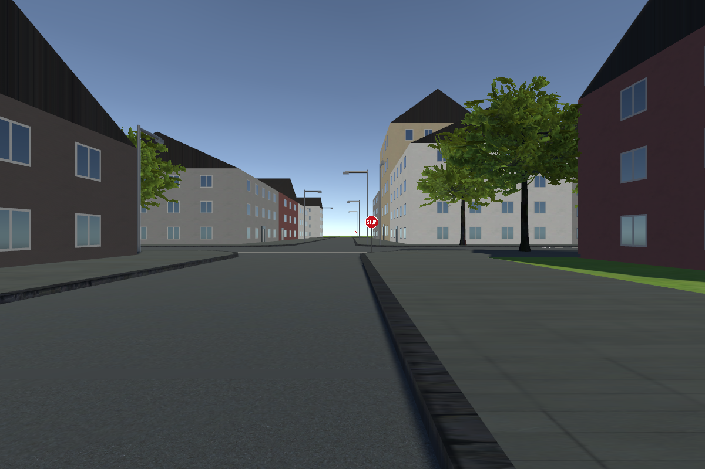
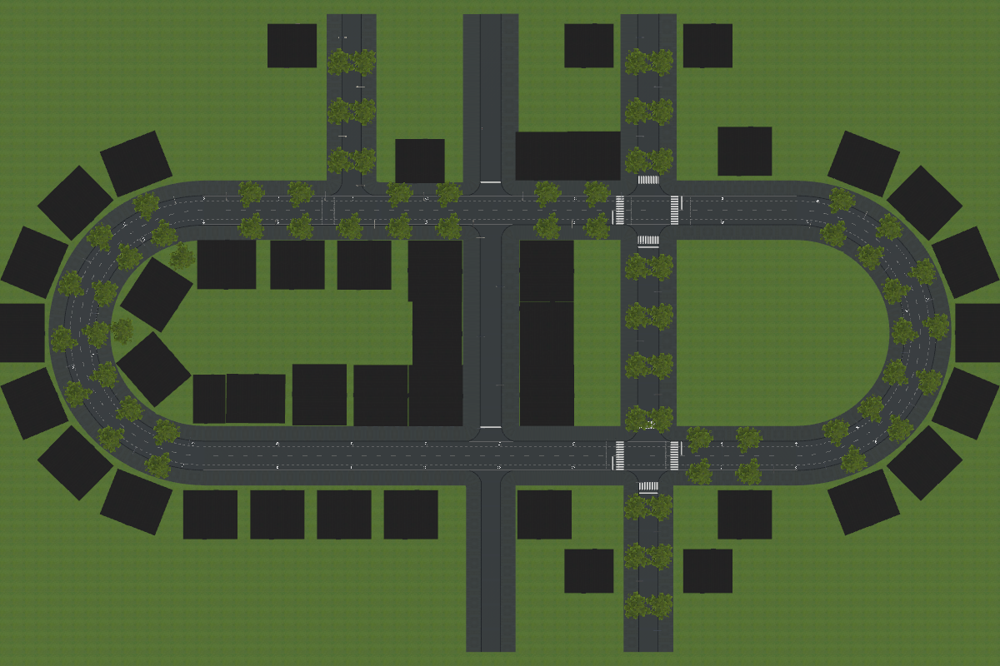

Ambientación de Santiago (A2): referencias y propuesta
2026-11-04. Las fotos son de Wikimedia Commons, enlazadas y sin descargar. Cada una lleva su licencia y su autor; se usan solo como referencia. Nada de esto está colocado todavía: falta tu aprobación.
Cómo se ve hoy la escena


1. Ciclovías


- Pavimento: casi siempre asfalto gris normal, no de color. El color azul se usa en algunos cruces y tramos nuevos, para hacer visible por dónde cruzan los ciclistas.
- Segregación en calzada: por la velocidad de la vía, según el manual MINVU y la propuesta OGUC. Entre 30 y 50 km/h basta una franja de 30–50 cm con tachas o tachones en el eje (ciclobanda). Sobre 50 km/h, segregación física. [VERIFICAR] la norma vigente: la OGUC aparece como consulta pública.
- Ancho: 1.5–1.8 m si es unidireccional, 2.2–2.4 m si es bidireccional. Las fuentes no coinciden.
2. Calles y arbolado


- Plátano oriental: en realidad es casi siempre plátano híbrido (Platanus × hispanica). Es el árbol típico de las avenidas de Providencia (Ricardo Lyon, Pedro de Valdivia, Andrés Bello). Le siguen el liquidámbar y la robinia (la «acacia»). No encontré datos de jacarandá.
- Troncos: es común que estén encalados en blanco en la base. [VERIFICAR] si lo quieres.
3. Paraderos de Red


4. Señales y placas de calle


El plan suponía placas azules, pero en todas las fotos de Santiago y Providencia son negras con letras blancas.
5. Mobiliario y veredas


6. Fondo: cordillera


Propuesta de elementos
Todo se arma con geometría y texturas propias generadas por código, así que no hace falta descargar nada. No se cambian las calles, las veredas, los edificios ni los semáforos. La colocación la hace SimBici > Decorate City, con semilla: se puede rehacer o borrar entera.
| # | Elemento | Cómo | Cantidad aprox. |
|---|---|---|---|
| 1 | Señal PARE en vez de «STOP» | Cambio de textura de las señales existentes | Las que hay |
| 2 | Placas de calle negras con letras blancas, flecha de sentido y numeración | En el poste del semáforo o en un poste propio, en cada esquina. Nombres típicos de Santiago. | ~2 por esquina |
| 3 | Paraderos de Red: refugio gris con banca y dos paneles sin marcas, señal de parada y solera amarilla de 12 m | Sobre el anillo, en la franja de mobiliario, con paso libre ≥ 1.8 m. El bus sigue sin detenerse. | 3–4 |
| 4 | Vereda de baldosa 40 × 40, gris con bandas rojas, y baldosa táctil amarilla en las rampas | Textura nueva del material de las veredas | Todas |
| 5 | Soleras amarillas en esquinas y paraderos (no estacionar) | Franja pintada sobre la solera existente | Cerca de los cruces |
| 6 | Árboles: se mantienen los 80, con alcorque de tierra y base del tronco encalada | Piezas pequeñas al pie de cada árbol | 80 |
| 7 | Grifos amarillos | Cerca de las esquinas, junto a la solera | Cada ~120 m |
| 8 | Basureros metálicos en poste | Franja de mobiliario | Cada ~60 m |
| 9 | Quioscos verdes | En veredas anchas, lejos de los cruces | 1–2 |
| 10 | Postes de hormigón con cables aéreos (opcional) | Cables como mallas delgadas | Cada ~35 m en 2–3 calles |
| 11 | Cordillera nevada al fondo y bruma leve (opcional) | Malla lejana de bajo costo y niebla lineal suave | 1 |
Reglas de colocación:
- nada a menos de 3 m de un cruce peatonal ni en el radio de la esquina;
- nada que tape la vista de semáforos o señales;
- en la vereda, cada objeto lleva
NavMeshModifierno caminable y se rehace el setup de peatones, que conserva la densidad; - todo estático y agrupado (static batching).
Preguntas antes de colocar
A. Ciclovía pintada. Hoy no hay. Pintar ciclobandas cambia la condición del experimento (adelantamiento en tráfico mixto). Mi recomendación: no pintar en la ruta del participante, y a lo más en calles laterales como ambientación.
B. Cables aéreos y cordillera: ¿los incluyo? Los cables delgados pueden verse con «escalera» (aliasing) en el visor.
C. Árboles: ¿basta con alcorque y tronco encalado, o prefieres además cambiar el modelo por uno con forma de plátano oriental? Eso último sí requiere descargar un modelo CC0.